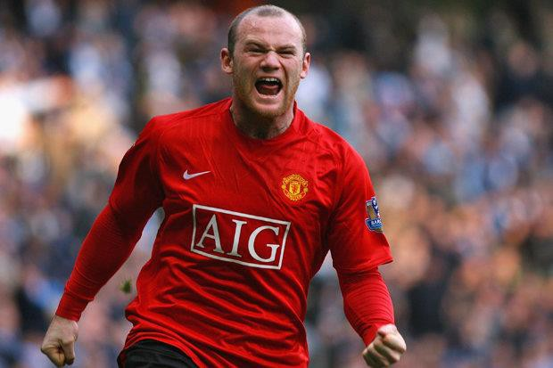
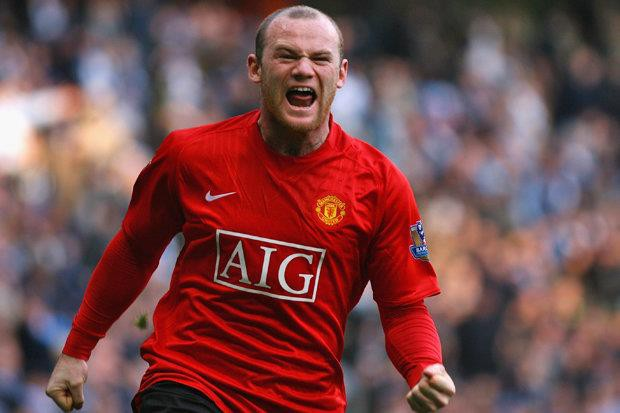

Wayne Mark Rooney (sinh ngày 24 tháng 10 năm 1985) là một cựu cầu thủ bóng đá và hiện là huấn luyện viên bóng đá cho câu lạc bộ EFL Championship Birmingham City. Anh thường chơi ở vị trí tiền đạo, đôi khi anh cũng được sử dụng ở vị trí tiền vệ. Được đánh giá là một trong những cầu thủ xuất sắc nhất thế hệ của anh, Rooney là cầu thủ ghi nhiều bàn thắng nhất cho Manchester United và từng ghi bàn nhiều nhất cho đội tuyển bóng đá quốc gia Anh từ năm 2015 đến 2023.[5]
 
